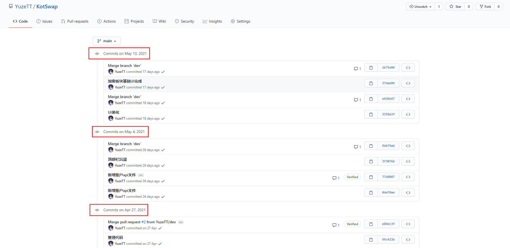
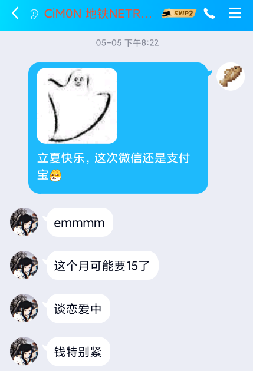
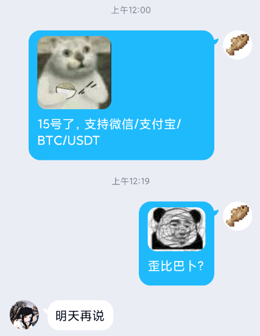
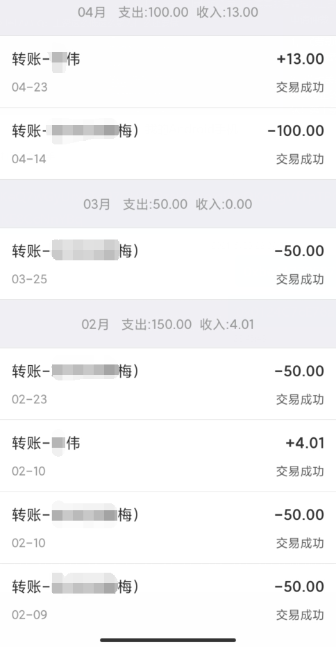

关于 “鸢尾咖啡馆-Iris café” 管理员 “文文 CiM0N” 欠薪劝退员工 事件的相关信息
更新时间 2021年5月31日00:14:36
BY: YuzeTT
文文 CiM0N：合同法的“甲方”，以下简称“文文”
YuzeTT：合同法的“乙方”，受害者，以下简称“TT”
事情概览
- 月工资发放时间是每月5日（2020年底定下）。
- TT第一次催促。文文起初表示“谈恋爱中，暂时拿不出钱发放工资，需要等到本月15日（2021年5月15日）”。
- TT要求先发放100元，用于服务器续费，文文当月8日2次催促下发放100元工资。续费清单如下（均月头续费）。
web后台服务器：24元/月（腾讯云服务器，最低配1H1G25GB，1TB30M），TT自费；
Nginx反代/玩家后台服务器：27元/3月（腾讯云学生优惠，5月头续费，最低配1H2G40GB，1TB5M），TT自费；
Web部署1：5美元/月（约合31.837人民币元），TT自费；
Web部署2：5美元/月（约合31.837人民币元），TT自费；
- TT于当月14日第3次催促；15日第4次催促，回复“明天再说”；16日第6次催促；17日第9次催促；18日第11次催促均未回复。
- 文文于回复，详见后文。
- TT退群并备案维权
- 文文被众多平台加入失信黑名单
双方观点
可能造成血压急剧升高，TT多次血压飙升awa
文文
- 服务器运维工作、软件开发、软件维护’网站开发、网站维护、相关管理，无需付费，文文无义务为TT结算工资。
- 有偿服务器运维工作、软件开发、软件维护’网站开发、网站维护、相关管理。是文文主动提出结算工资，TT无权干扰，无权索要工资。
- TT本月工作量和工资不成正比。
- TT起初均未收费，现在应当保持无偿。
- TT做的东西都是编程基础，文文也能胜任。
- TT没写什么东西并且写的代码没用。
TT
反驳文文的观点
- 无需付费？全职服务器运维月工资3k+；软件开发参照程序员接私单平台（码市：https://codemart.com/）。
[No.27476 Chrome浏览器插件定制] ￥2,000
类似MC插件定制，TT为此服务器写过的插件有：TTWL旧版白名单、TVWL新版白名单、UZTools众多功能。算命实装插件、网络安全插件等等，TT均没有另外收费。
[No.27468 pc端react ant-design后台管理系统] ￥2,000
Web后台，TT写过的有：craft-tab、sloth-admin、iriscafe-doc、ttvanillawl、qcloud、ttwl/tvwl、irisbox、ttcaptcha以及没发布的等等
- 关于文文主动提出工资一事TT并没有提出？TT和安逸比较熟，刚开始的想法只是把服务器开起来我就离开了，免费帮个忙而已。后续问过安逸是否考虑有偿维护，不考虑我就离开了。最后文文决定发工资，我随即留下。为服务器提供插件开发/软件开发/web搭建/维护等。
- 工资和工作量不成正比，TT早已预料到文文会**，所以TT将正在开发的项目开源，公开可查。提交日期均保留。
TT在github开源的项目主页：https://github.com/YuzeTT/KotSwap（需要翻墙）
提交代码记录截图

- 应当保持无偿？同上，只是因为碍于面子，并没有公开提出过有偿。
- 代码都是基础？请先看一下我的github仓库再说话，TT从成为服务器管理员开始不断学习java进阶课程（插件开发），Nodejs课程（api开发），Kotlin课程（机器人开发）。
- 代码没用？我直接列我写过的能用的东西吧
官网我搭建的 官网ui是模板 毛坯房是被入侵删了样式文件 白名单我写的我设计的 api我写的 代码完全自己写的 ddos期间的验证我写的 ui我写的 算法我写的 后端我写的 防护用的是我自己的api cos被刷流量我自己处理的 也是自费的 管理后台我写的我设计的 wiki我写的 io后续我学了弥补上了 网站数十个 here我写的 远程ban我写的 联合ban我接入的 白名的api我写的 qq机器人我写的 qq机器人算法我写的 qq机器人api我写的 推送我写的 网盘我写的 分发文件我写的 网盘后端我写的 账户系统完全是我造的轮子（github开源） iriscloud我写的 ui也是 东北大学api我接入的 软推送我接入的 pwa我写的 ssl证书大部分都是我自己申请的 irisdoc我写的 qcloud api管理网写的 irisbox ui我写的 前段我写的 后端我写的 白名单两次大迭代我写的 api也是用我自己的
- 无需付费？全职服务器运维月工资3k+；软件开发参照程序员接私单平台（码市：https://codemart.com/）。
TT的观点
- 文文本月5号说的是“钱特别紧”，应理解为本月可以发工资，但是没法及时发放。

- TT15日催促文文，文文态度极差，只回复了一句“明天再说”，说明情况后表示400元没用并不在回复TT。TT随即找到法学的朋友寻求帮助，进行了备案和证据固化，聊天记录具有法律效应。

- 由于文文是个人，非用人单位，所以依照下列方法进行处理。
一，未签订劳动合同，老板辞退员工的，可以获得相应的补偿；如果单位拒绝给付的，可以向当地劳动管理部门申请仲裁，仲裁无法达成一致意见的，还可以起诉：
1，《劳动法》关于仲裁时效规定于第八十二条：提出仲裁要求的一方应当自劳动争议发生之日起六十日内向劳动争议仲裁委员会提出书面申请；
2，劳动关系存续期间因拖欠劳动报酬发生争议的，劳动者申请仲裁不受规定的仲裁时效期间的限制；但是，劳动关系终止的，应当自劳动关系终止之日起一年内提出。二，《中华人民共和国劳动合同法》关于劳动关系的确认：第十条建立劳动关系，应当订立书面劳动合同。已建立劳动关系，未同时订立书面劳动合同的，应当自用工之日起一个月内订立书面劳动合同。用人单位与劳动者在用工前订立劳动合同的，劳动关系自用工之日起建立。第十四条规定之---用人单位自用工之日起满一年不与劳动者订立书面劳动合同的，视为用人单位与劳动者已订立无固定期限劳动合同；三，《中华人民共和国劳动合同法》关于未签劳动合同的补偿规定：第八十二条：用人单位自用工之日起超过一个月不满一年未与劳动者订立书面劳动合同的，应当向劳动者每月支付二倍的工资；2，用人单位违反本法规定不与劳动者订立无固定期限劳动合同的，自应当订立无固定期限劳动合同之日起向劳动者每月支付二倍的工资。
- 文文本月5号说的是“钱特别紧”，应理解为本月可以发工资，但是没法及时发放。
TT的诉求
- 结算当月工资，工资共计500元，已发100元，需结算剩余的400元。本次事件备案费用+律师费用由文文承担，共计30元。总计430人民币元。
- 需要我回去请完成第一条并签订劳动合同。
- 只需要拿回地图请完成第一条。
- 拒绝支付TT将采取上文的方式处理。
- 结算后将撤除失信黑名单。
- TT已联系支付宝协助调查，未结算将按照《中华人民共和国劳动合同法》进行司法冻结。
- 如拒不结算，TT将随时跟踪服务器最新进展并合法采取行动。
问题回答 Q&A
Q：为什么退群了
A：TT 19年确诊抑郁。母亲劝说，撑不住就退了。
Q：工资多少
A：500人民币/月，下午到凌晨随叫随到，多次因为服务器事情忙到凌晨2点。全年无休。
Q：为什么刚开始就提出收费
A：见上文。
Q：后续怎么处理
A：已备案，已存证。已提交失信黑名单。部分平台已通过黑名单请求。
Q：工资这么低这么累为什么还要做
A：TT还是学生，身处山区家境困难。工资够我一个月开销了，剩下的交给母上大人给家庭缓解负担了。 > 
Q：地图还在吗
A：在。但是请文文结清工资谢谢。
Q：TT打算维护其他服务器吗
A：TT还是中学生，之后应该没空了。
Q：为什么不找催工资的团队
A：尽量合法解决，逼不得已那我也没办法。
一些话
如果不能及时发工资，请提前说明，我可以理解。不要等到发工资当天和我说无法发放。有些事情安排在了这天（比如需要续费），我怎么办。
不需要我了请按照劳动法，提前一个月通知。补不补偿一个月工资我无所谓。最主要的是请通知我一下！！！
既然说了推迟，那当然认为可以发放，我就继续敲代码了。后面突然说不发了，那我的辛苦白费了？你白嫖了我的劳动力？
举个栗子：你定了一份蛋糕，5号来付款并取走
你推迟到了15号，那商家当然认为你需要这个蛋糕。商家5号的安排就被打乱了。
到了15号，人不来了，16号、17号也是
18号，你说不要了，钱也不交了。可是人家已经做好了，材料和精力已经花这上面了。不要是几个意思？？？
一些警告
大家在工作的时候，一定要签订劳动合同，尽管对方是个人单位也需要签署协议，以便维护自身权益。
对方拒发工资开始，一定要去固化证据（时间戳备案），以便起诉。
找工作的时候请查看某平台的失信公司/失信老板，确保老板可靠。
如未结清/拒发工资，请到某平台进行投诉，防止大家也上当...
起诉无需跑到对方当地，直接登录对方当地互联网法院提交诉讼即可。
诉讼费用极为便宜。一般20RMB就可以解决（有劳动合同甚至可以免费），胜诉后可要求对方支付开庭费用。
请第一时间到对方当地的贴吧发帖，微博发同城。防止其他人/老板被坑。
按劳动法规定，未签合同的按双倍工资赔偿。
尽量把事情闹大，受害者肯定是占上风的，让大众评理！